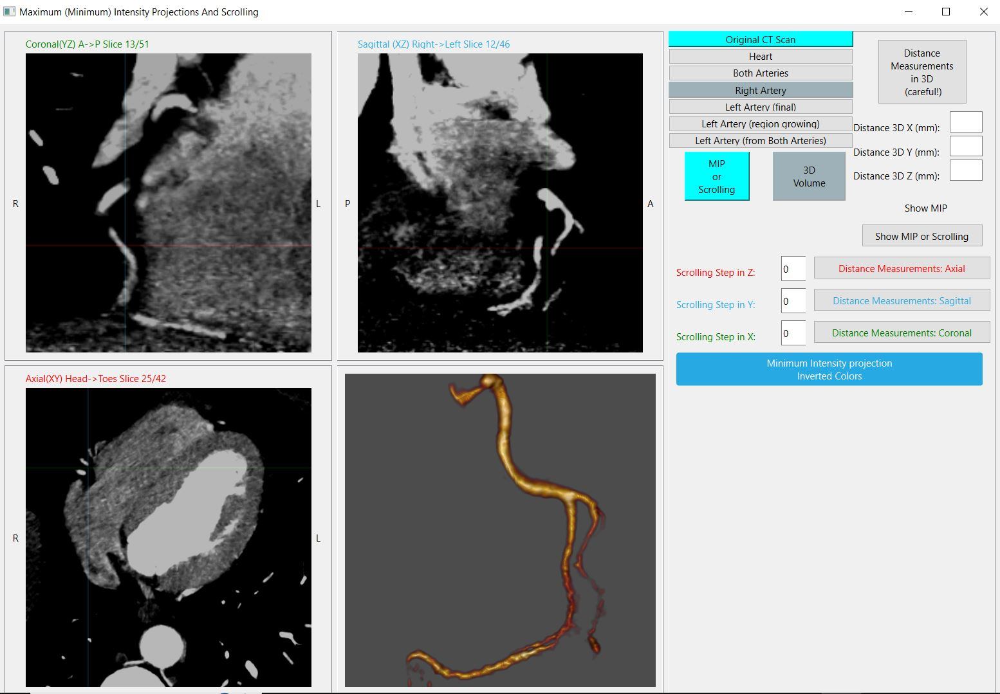

Проекции максимальной интенсивности (MIP)
MIP позволяет эффективно дифференцировать усиленные контрастом сосудистые и несосудистые структуры высокой интенсивности. Изображения MIP обычно менее шумные по сравнению с обычными срезами или сечениями. Они полезны для оценки длинных сегментов извилистых сосудов и мелких ветвей. Преобразование MIP часто позволяет сделать картину сосудистого поражения более очевидной и используется для более детальной визуализации коронарных поражений.
В проекции максимальной интенсивности структуры с более высокой плотностью скрывают структуры более низкой плотности. Этого можно избежать, подобрав толщину исходного объёма, используемого для построения MIP, в соответствии с толщиной исследуемого сосуда.
Чтобы отобразить более длинный сегмент сосуда в наклонной плоскости или в криволинейной реконструкции, MPR или CMPR изображения можно преобразовать в MIP изображения. Для отслеживания ветвей артерий также может быть организована прокрутка плоскостей MIP вдоль подходящим образом выбранных направлений.
Из-за потери глубины объёмных данных MIP следует использовать с осторожностью в кальцинированных сосудах и при наличии стентов.
